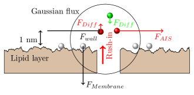

Figure 2.17 shows the forces exerting on ions near the internal surface of the membrane at the exit of an ion channel in the moment next to after that ions rush into the internal segment of the neuron. The white (likely mainly with some ) ions are sitting on the surface and the charges on the opposite side of the membrane () firmly fixes them. They are not ”free charge carriers”: they provide the resting potential. They are in rest because of the counterforce exerted by the lipid layer.
At the beginning of the AP, ions rush into the intracellular segment. The accelerating field across the membrane’s surfaces moves them at the corresponding Stokes-Einstein speed (see section 2.8.4) through the ion channel. When they reach the ion channel’s exit, in the absence of the enormous field, the ions brake down to the speed corresponding to the local field in the electrolyte; practically, in a short distance they ”stop”. A large amount (about ; about the amount of the free charge carriers in the segment) of ions appear suddenly in the layer near the surface; that is, the charge near the ion channel’s exit port suddenly increases. (In the previous moment, the ions present in the volume segment are free to move but the resultant force of the thermodynamic and the electrical forces keeps them in place in a balanced state.) Since the total electric flux through any closed surface (Gaussian surface) is directly proportional to the enclosed electric charge, the local electric field suddenly increases compared to its environment, so the ions attempt to move along the local gradient. There are constraints, however.
In the direction of the ion channel (where they arrived from) they face an electric field of opposite direction. In the resting state, most of the ions in that local volume are ions. The rushed-in ions suddenly increase the local concentration that practically kicks out the ions which help to block the further ion input. Their appearance has two different effects in the directions perpendicular to and parallel with the membrane’s surface. In the perpendicular direction, relatively small forces move the ions toward the former ’resting state’ (the forces are composed of the local thermodynamic and electrical forces). Given that the fields are low, the speed of the in-place-ions is low (above the diffusion speed, but much below the rush-in speed), a significant ion enrichment in the near-to-membrane takes place. Notice that the ions move under the resultant force due to the thermodynamic and electrical gradients, so the ions move toward the bulk, the ions toward the membrane. This movement, however, is slow compared to the speed of the gradient change of an AP process.

In the horizontal direction, only the ions in the ”dynamic layer” participate in the game. Three forces exert on the ions.
Based on the electric fields (the forces acting on a charge are proportional to the local field), one can estimate the order of magnitude of the forces in Fig. 2.17 (not proportional). We can assume that around the peak voltage of the AP is , that means across the AIS a electric field. That is, one can safely assume that the force perpendicular to the membrane’s surface (even if it decreases during generating an AP to the half compared to its value in the resting state) is large enough to keep the ions fixed on the surface. Therefore, the composition and the amount of charge on the surface can be considered as constant, and the electric (and the related other) changes shall be attributed to the charges in the dynamic layer.
All this happens in the layer of thickness of 1 nm near the surface of the membrane, as observed by physiology. For the ions, the only way out is to leave the membrane through the AIS. The AIS, with its large number of ion channels, can be modeled as a resistor, and generates a potential on it. As described, the potential changes its value and direction. Correspondingly, ions flow through the AIS intially in outward, later in inward, then again in outward direction. There are no separated and cooperating and channels with precisely timed activation. The AIS current consists of mainly with a small amount of . As discussed, new ions from the outside space flow into the intracellular space. Although most of the flows out through the AIS, the leftover diffuses into the bulk and must be pumped out. This fact is why Na/K pumps are needed.
At any given position, the Gauss-flux of a volume continuously changes as the amount of charges in the given volume changes due to the vibration of the electrolyte plus the mentioned forces. The electric field and the potential is proportional to the flux and so, to the charge, and so, to the current. The speed of the charge wave depends only on the medium (i.e., constant) and the amplitude is simply an exponential discharge. The observer can measure the product of an exponential decay and a damped oscillation.
As discussed in section 2.2.2 and shown in Fig. 2.7.2, the voltage across the membrane decreases during generating the AP that means also a decrease of charge on the membrane’s surface. The ”white” ions may also move toward the bulk for a short distance, and reach the dynamic layer. That is, all positive ions may move out through the AIS, without selectivity. As discussed in section 2.8.6, the hydrolyzis of ATP produces ”fresh” ions near the membrane and the local field moves them toward the membrane, so the neuron can restore its ’setpoint’ as described in section 2.6. That means that the ”downhill” movement of ions across the membrane through the ion channels is not against the conservation law of energy. Claims such as ”Ion channels cannot be coupled to an energy source to perform active transport, so the transport that they mediate is always passive (’downhill’)” [104], are wrong. The surfaces of the membrane serve serve as a kind of ion- and energy buffer, and the continuous material transfer (the background logistics of life) performs refilling the buffer.